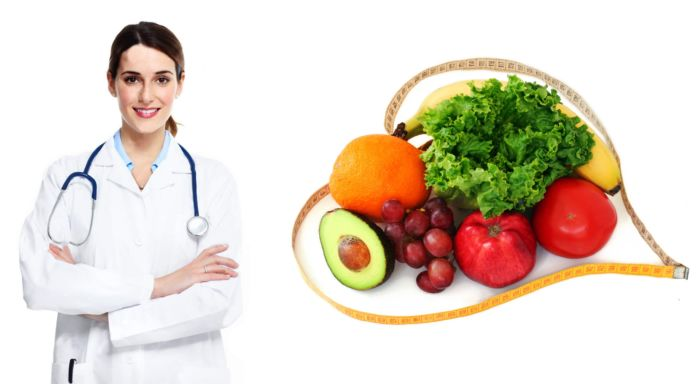
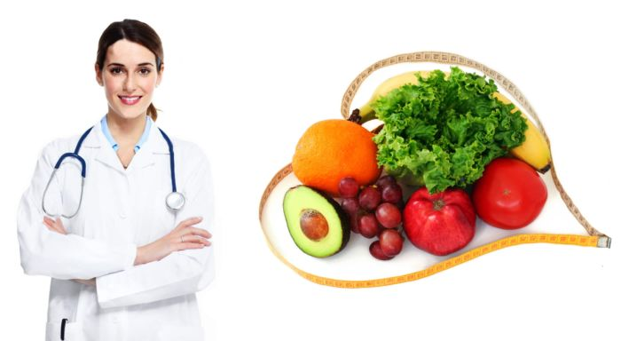

ZASTO ANGAZOVATI NUTRICIONISTU?
Ovo pitanje s vremena na vreme čujem od osoba koje imaju problem sa viškom kilograma, pa čak i od onih koji imaju i veće zdravstvene tegobe. Svima onima koji imaju ovu nedoumicu sam pokušala da objasnim zašto im je potreban nutricionista. Neke osobe jedostavno ne razumeju koncept individualne dijete jer posmatraju svoj problem na pogrešan način. One obično misle da su sve osobe sa istim potrebama, pa da je sasvim u redu da upotrebljavaju najnoviju popularnu dijetu iz časopisa i interneta ili se upuštaju u eksperimente sa pilulama i čajevima ili prosto gladuju. Sve je to, nažalost, pogrešno. Neke pilile i čajevi za mršavljenje koje se agresivno reklamiraju na televiziji i novinama ne pružaju rešenje problema kilograma, jer one utiču na centre za glad u mozgu. Tada osoba konzumira uobičajenu hranu, ali u manjoj meri. Po prestanu tretmana, telo uzvraća udarac, apetit vam se povećava, pa nastaje još veći problem. Gladovanje takođe nije prava opcija i najgora je odluka koju možete doneti.
Razlicitost
Zašto su štetne uopštene, popularne dijete? Jednostavno, svi mi smo različiti, metabolizam nam se razlikuje, kao i potrebe za energijom i nutrijentima. Recimo to na ovaj način: osoba A radi kao prodavačica u supermarketu i ne kreće se tokom rada kao osoba B koja je fitnes instruktor ili osoba C koja je lekar i radi po smenama. Šta ih još razlikuje? Njihove navike u ishrani, genetika, fizička forma, visina, masa, procenat masti, mišića i vode u telu, krvna slika, krvni pritisak, kao i eventualna oboljenja, bilo da su akutna ili hronična. Sve pomenuto su varijable koje utiču na izbor i količinu namirnica u ishrani. Nuticionista najbolje zna ko, kada, koliko i šta treba da pojede, jer ako bi osobe A, B i C imale identičan plan ishrane, prva bi se ugojila, druga smršala, a eventualno treća ostala na nekom optimumu. Ovo je samo pod uslovom da su sve tri osobe zdrave

Pored ishrane važno je znate da je fizička aktivnost bitna za sagorevanje masti. Mišići su fabrike za sagorevanje masti, ali neke popularne dijete idu k tome da se ne koriste cele grupe namirnica i da se izbegavaju fizički napori. Ugljeni hidrati su naše gorivo, ali ako ih previše unosti one će se transformisati u masti. Masti su, opet, važne za sintezu hormona, prenos vitamina i još nebrojeno mnogo uloga. Baš kao i ugljene hidrate i masti, belančevine morate unositi koliko je vašem telu potrebno. Ignorisanjem fizičke aktivnosti ćete sigurno izgubiti na mišićnoj masi, a tako gubite i mogućnost da trošite kalorije iz masti. Mišiće možete sačuvati redovnom fizičkom aktivnošću i pravilnom ishranom
Zacarani krug
Kada shvatite da većina popularnih dijeta ne funkcioniše, verovatno ćete dobiti kilograme, a izgubiti samopouzdanje. Vać sam ranije pisala o jo-jo efektu u kojem osoba ulazi u ciklus loše dijete i iz njega izlazi tako što ima više masnih naslaga nego pre. Kod tih dijeta u početku, naravno, kreće oduševljenje jer ste na startu uspeli da “smršate” ali taj entuzijazam je pogrešan jer niste izgubili masne naslage, već tečnosti i mišićnu masu. Kad se vratite na stari režim ishrane, telo će se potruditi da još više masti sačuva u rezervama. Zamislite da ste isprobali 5-6 neuspešnih dijeta i došli na 15, 20 kg viška. Da li zaista verujete da ćete sami moći naći pravu kombinaciju koja će vas vratiti na normalu? Nije greh tražiti pomoć, a nutricionista vam tu samo može pomoći. Od ključne je važnosti da što pre to shvatite, jer mali problem se uvek lakše rešava nego veliki
Ishrana bolesnih
Zdravlje je bogatstvo. Bolesnim osobama je od suštinske važnosti da imaju prave namirnice u svojoj ishrani, jer hrana može biti lek ali može pogoršati postojeći ili stvoriti novi zdravstveni problem. Ono što je za dijabetičare dobro, ne mora da bude dobro za osobe koje pate od gastritisa ili pak celijaklije. Čak i ako imate manje opasna stanja poput povišenog krvnog pritiska ili holesterola, ne smete ignorisati te činjenice prilikom izbora namirnica u dijeti. Neuvažavanje vašeg zdravstvenog stanja prilikom sastavljanja dijete može dovesti da se vaše zdravstveno stanje pogorša, a onda ste sami sebi napravili još veći problem. Veoma je opasno koristiti uopštene dijete ako ste bolesni, već se obavezno javite nutricionisti. Ako ste mislili da je sastavljanje dijete za jednu bolest komplikovano, razmislite koliko je to teže uraditi kada kada neka osoba ima više bolesti. Nutricionista ovde mora dobro da poznaje problematiku i uradi takav izbor namirnica koji će dovesti do poboljšanja stanja pacijenta. U ovakvim slučajevima sigurno ćete pogrešiti ako se ne posavetujete sa nutricionistom. Ako ne želite da eksperimentišete sa vašim zdravljem, potražite nutricionistu. Ako stanujete daleko ili zbog obaveza to ne možete lično učiniti, uradite to putem interneta. Uz pomoć nutricioniste ćete uštedeti i vreme i novac, bez rizika po vaše zdravlje. Cena usluge nutricioniste je mnogo manja od komplikacija koje se mogu pojaviti ako sami tražite rešenje. Nutricionisti su školovani stručnjaci koji znaju mnogo toga o ishrani, a na Vama je da li ćete to znanje iskoristiti ili tražiti svoj put. Ja vam toplo preporučujem ovo prvo.
Ovo pitanje s vremena na vreme čujem od osoba koje imaju problem sa viškom kilograma, pa čak i od onih koji imaju i veće zdravstvene tegobe. Svima onima koji imaju ovu nedoumicu sam pokušala da objasnim zašto im je potreban nutricionista. Neke osobe jedostavno ne razumeju koncept individualne dijete jer posmatraju svoj problem na pogrešan način. One obično misle da su sve osobe sa istim potrebama, pa da je sasvim u redu da upotrebljavaju najnoviju popularnu dijetu iz časopisa i interneta ili se upuštaju u eksperimente sa pilulama i čajevima ili prosto gladuju. Sve je to, nažalost, pogrešno. Neke pilile i čajevi za mršavljenje koje se agresivno reklamiraju na televiziji i novinama ne pružaju rešenje problema kilograma, jer one utiču na centre za glad u mozgu. Tada osoba konzumira uobičajenu hranu, ali u manjoj meri. Po prestanu tretmana, telo uzvraća udarac, apetit vam se povećava, pa nastaje još veći problem. Gladovanje takođe nije prava opcija i najgora je odluka koju možete doneti.
Razlicitost
Zašto su štetne uopštene, popularne dijete? Jednostavno, svi mi smo različiti, metabolizam nam se razlikuje, kao i potrebe za energijom i nutrijentima. Recimo to na ovaj način: osoba A radi kao prodavačica u supermarketu i ne kreće se tokom rada kao osoba B koja je fitnes instruktor ili osoba C koja je lekar i radi po smenama. Šta ih još razlikuje? Njihove navike u ishrani, genetika, fizička forma, visina, masa, procenat masti, mišića i vode u telu, krvna slika, krvni pritisak, kao i eventualna oboljenja, bilo da su akutna ili hronična. Sve pomenuto su varijable koje utiču na izbor i količinu namirnica u ishrani. Nuticionista najbolje zna ko, kada, koliko i šta treba da pojede, jer ako bi osobe A, B i C imale identičan plan ishrane, prva bi se ugojila, druga smršala, a eventualno treća ostala na nekom optimumu. Ovo je samo pod uslovom da su sve tri osobe zdrave

Pored ishrane važno je znate da je fizička aktivnost bitna za sagorevanje masti. Mišići su fabrike za sagorevanje masti, ali neke popularne dijete idu k tome da se ne koriste cele grupe namirnica i da se izbegavaju fizički napori. Ugljeni hidrati su naše gorivo, ali ako ih previše unosti one će se transformisati u masti. Masti su, opet, važne za sintezu hormona, prenos vitamina i još nebrojeno mnogo uloga. Baš kao i ugljene hidrate i masti, belančevine morate unositi koliko je vašem telu potrebno. Ignorisanjem fizičke aktivnosti ćete sigurno izgubiti na mišićnoj masi, a tako gubite i mogućnost da trošite kalorije iz masti. Mišiće možete sačuvati redovnom fizičkom aktivnošću i pravilnom ishranom
Zacarani krug
Kada shvatite da većina popularnih dijeta ne funkcioniše, verovatno ćete dobiti kilograme, a izgubiti samopouzdanje. Vać sam ranije pisala o jo-jo efektu u kojem osoba ulazi u ciklus loše dijete i iz njega izlazi tako što ima više masnih naslaga nego pre. Kod tih dijeta u početku, naravno, kreće oduševljenje jer ste na startu uspeli da “smršate” ali taj entuzijazam je pogrešan jer niste izgubili masne naslage, već tečnosti i mišićnu masu. Kad se vratite na stari režim ishrane, telo će se potruditi da još više masti sačuva u rezervama. Zamislite da ste isprobali 5-6 neuspešnih dijeta i došli na 15, 20 kg viška. Da li zaista verujete da ćete sami moći naći pravu kombinaciju koja će vas vratiti na normalu? Nije greh tražiti pomoć, a nutricionista vam tu samo može pomoći. Od ključne je važnosti da što pre to shvatite, jer mali problem se uvek lakše rešava nego veliki
Ishrana bolesnih
Zdravlje je bogatstvo. Bolesnim osobama je od suštinske važnosti da imaju prave namirnice u svojoj ishrani, jer hrana može biti lek ali može pogoršati postojeći ili stvoriti novi zdravstveni problem. Ono što je za dijabetičare dobro, ne mora da bude dobro za osobe koje pate od gastritisa ili pak celijaklije. Čak i ako imate manje opasna stanja poput povišenog krvnog pritiska ili holesterola, ne smete ignorisati te činjenice prilikom izbora namirnica u dijeti. Neuvažavanje vašeg zdravstvenog stanja prilikom sastavljanja dijete može dovesti da se vaše zdravstveno stanje pogorša, a onda ste sami sebi napravili još veći problem. Veoma je opasno koristiti uopštene dijete ako ste bolesni, već se obavezno javite nutricionisti. Ako ste mislili da je sastavljanje dijete za jednu bolest komplikovano, razmislite koliko je to teže uraditi kada kada neka osoba ima više bolesti. Nutricionista ovde mora dobro da poznaje problematiku i uradi takav izbor namirnica koji će dovesti do poboljšanja stanja pacijenta. U ovakvim slučajevima sigurno ćete pogrešiti ako se ne posavetujete sa nutricionistom. Ako ne želite da eksperimentišete sa vašim zdravljem, potražite nutricionistu. Ako stanujete daleko ili zbog obaveza to ne možete lično učiniti, uradite to putem interneta. Uz pomoć nutricioniste ćete uštedeti i vreme i novac, bez rizika po vaše zdravlje. Cena usluge nutricioniste je mnogo manja od komplikacija koje se mogu pojaviti ako sami tražite rešenje. Nutricionisti su školovani stručnjaci koji znaju mnogo toga o ishrani, a na Vama je da li ćete to znanje iskoristiti ili tražiti svoj put. Ja vam toplo preporučujem ovo prvo.
Nasi saradnici

Dusan Petrovic
Dr.Mr Nutricionista
VMA

Nikola Delibasic
Fiziolog
VMA

Nevena Obradovic
Life Couch
VMA